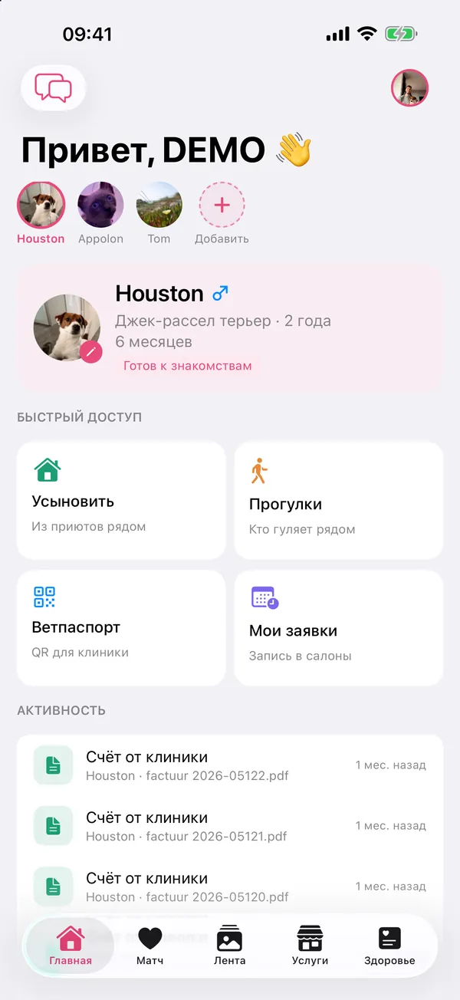
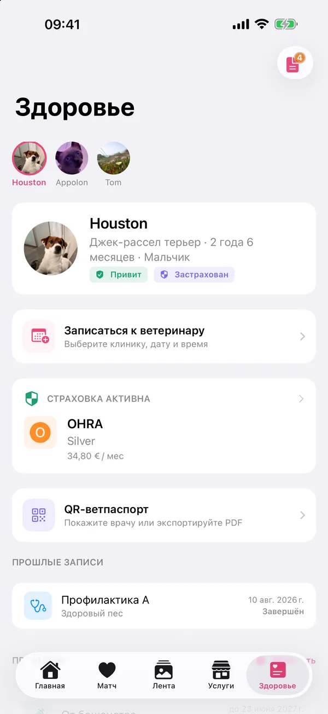
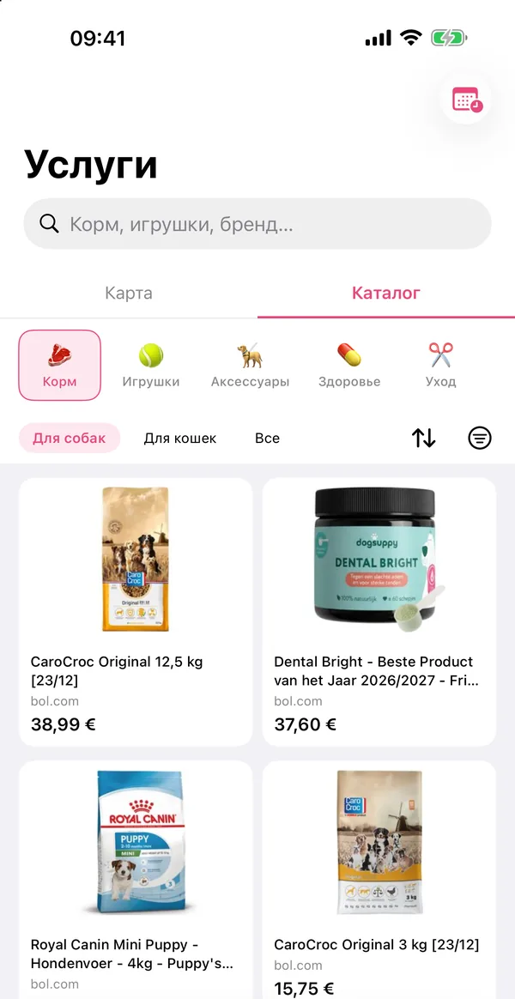
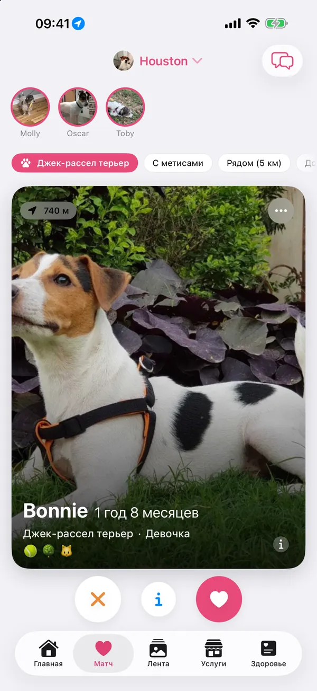
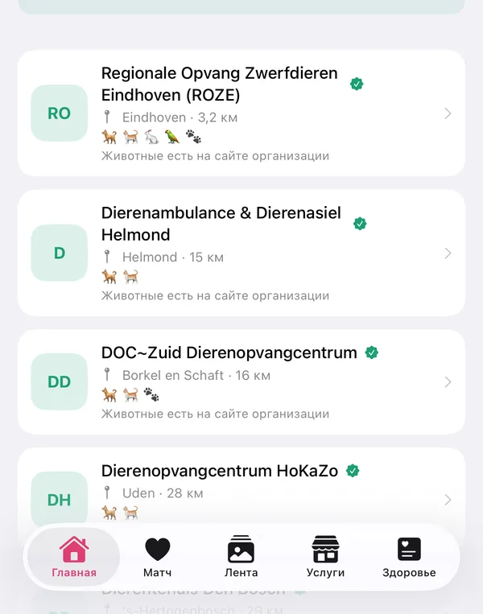

Вся жизнь питомца в твоём кармане
Здоровье и бумаги, соседи и пары, приюты и груминг рядом, а ещё заказ корма и игрушек. Всё, что касается вашей собаки или кошки, в одном приложении.
Сообщить о запуске
Бета сейчас закрытая: мы тестируем с небольшой группой владельцев. Оставьте email, и мы напишем, когда она откроется или PaWow появится в App Store.
Только email и язык. Без трекеров.
Вторник с Хьюстоном и Апполоном
Пример дня: вторник джек-рассела Хьюстона и мейн-куна Апполона. Экраны собраны по образцу приложения.
Соседи и пары: Утренняя прогулка с соседями
Видно, какие собаки сейчас гуляют рядом, и можно пойти вместе. Ваше место видно, только если вы сами начали прогулку, и то с точностью до квартала.
3 собаки гуляют сейчасв пределах 1 кмСейчас Mollyсамоед400 м
Mollyсамоед400 м Oscarзолотистый ретривер650 м
Oscarзолотистый ретривер650 м Tobyбигль900 м
Tobyбигль900 мЗдоровье и бумаги: Напоминание для Апполона
Глистогонное, прививки, лекарства: PaWow напомнит вовремя, и про кошку, и про собаку.
 PaWowсейчасАпполон: глистогонное сегодняНажмите, чтобы отметитьPaWow8 минХьюстон: ревакцинация Nobivac через 12 днейЗапишитесь к ветеринару
PaWowсейчасАпполон: глистогонное сегодняНажмите, чтобы отметитьPaWow8 минХьюстон: ревакцинация Nobivac через 12 днейЗапишитесь к ветеринаруЗдоровье и бумаги: Врач сканирует QR‑паспорт
Прививки, номер чипа и прошлые визиты открываются в браузере клиники, без приложения. Ссылка действует 7 дней, и её можно отозвать в любой момент.
Ветпаспорт ХьюстонаДжек-рассел-терьер · Мальчик · Чип •••• 4127Комплексная (DHPPi)действует до мар. 2027ДействуетПитомниковый кашельдействует до янв. 2027ДействуетСсылка до пн, 20 окт.
Здоровье и бумаги: Счёт становится декларацией
Клиника присылает счёт по той же ссылке. Вы делаете из него черновик декларации для страховой, ничего не перепечатывая.
Счёт от клиникиПриём и прививка · 86,50 €Черновик декларацииМожно отправить в страховуюЗастрахованРядом: Груминг, приют или клуб породы
Ветклиники и салоны на карте, с заявкой в салоны-партнёры. Приюты и клубы пород со ссылками на их сайты, а ещё заказ корма и игрушек.
Приютовсо ссылкой на их сайт79Клубов породRaad van Beheer56Товаров для питомцевпримерно, обновление каждые 6 часов775Заявка в салончт 10:30 · мытьё и стрижкаПодтвержденоСсылки партнёрские: если вы покупаете через каталог, магазин платит PaWow небольшую комиссию.
Соседи и пары: Пара для Хьюстона
Хьюстон и Бонни понравились друг другу. Теперь хозяева могут списаться и договориться о встрече.
Взаимное совпадениеBonnie · джек-рассел-терьерПогуляем завтра в парке?
С удовольствием! В 18:00 у пруда?
Как PaWow выглядит на самом деле
Настоящие экраны из беты. Хьюстон и Апполон настоящие питомцы; анкеты в «Матче» демонстрационные.





Ваши данные остаются вашими
- Хранятся в дата-центрах в ЕС.
- Медицинские записи видите только вы, и врач, если вы поделились QR‑ссылкой.
- Другие видят местоположение питомца только округлённо.
- Мы не продаём ваши данные и не используем их для рекламы.
- Удалите аккаунт, и мы сотрём всё, включая питомцев и переписку.
Как PaWow зарабатывает
На партнёрских ссылках, а не на ваших данных. Если вы покупаете что-то через каталог, магазин платит PaWow небольшую комиссию. Для вас цена та же.
Подробнее о партнёрских ссылках
- Партнёрская программа bol PaWow участвует в партнёрской программе bol. Товары и цены в каталоге берутся у bol, а кнопка «Купить» ведёт на bol.com. PaWow независимое приложение и не часть bol.
- Покупка в магазине Сами мы ничего не продаём. Заказ, оплата, доставка и возврат идут через магазин, по его условиям.
- Главная цена у магазина Цены мы обновляем несколько раз в день, но действует всегда цена на сайте магазина.
- Явная пометка Партнёрские ссылки в приложении помечены, и личные данные магазину мы не передаём.
- Честные советы Статьи мы пишем сами. Комиссия не меняет того, что мы советуем.
Из гайдов
Все статьиЩенок дома: чек-лист на первые недели
Что купить до приезда щенка и что оформить в первые недели: от клетки-домика до регистрации чипа.
ЧитатьПоездка с собакой или кошкой по ЕС
Чип, прививка от бешенства и ветпаспорт: что нужно, за сколько начинать и какие страны требуют больше.
ЧитатьПрогулки с собакой в Нидерландах: поводок, уборка и зоны без поводка
Где собаке можно без поводка? Правила зависят от муниципалитета. Главное из них и советы для жары и тёмных вечеров.
ЧитатьЧастые вопросы
Как попасть в бету?
Бета идёт через TestFlight, приложение Apple для тестовых версий. Сейчас она закрытая. Оставьте email выше, и мы напишем, как только вы сможете присоединиться или PaWow появится в App Store.
Есть ли версия для Android?
Пока нет: сейчас PaWow только для iPhone с iOS 17 или новее.
На каких языках приложение?
На нидерландском, английском и русском. Язык меняется прямо в приложении.
Для каких животных PaWow?
Для собак, кошек, птиц, кроликов и других питомцев. Совместные прогулки только для собак.
Кто видит данные моего питомца?
Кличку, породу и фото питомца другие пользователи видят в подборе пар, в ленте и на карте прогулок. Медицинские записи, документы и переписку видите только вы и тот, с кем вы переписываетесь или кому отправили QR‑ссылку.
PaWow сам продаёт товары?
Нет. Каталог ведёт в интернет-магазины, например bol, там вы заказываете и платите. Читайте, как устроены партнёрские ссылки.
Узнайте первыми, когда PaWow откроется
Одно письмо, когда откроется бета или PaWow появится в App Store. Больше ничего.
Только email и язык. Без трекеров.